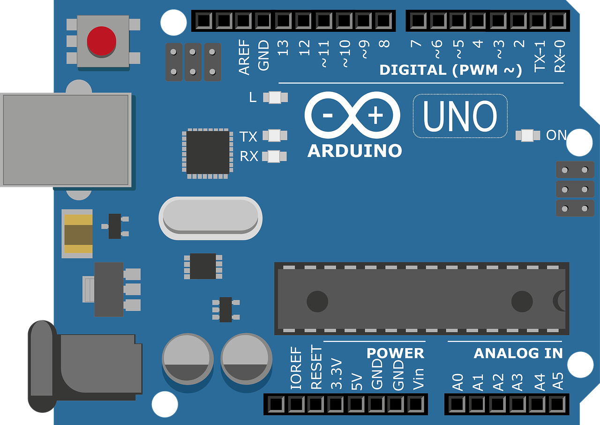

O Arduino é uma placa de prototipagem eletrônica de código aberto, amplamente utilizada para criar projetos interativos. Ela é equipada com um microcontrolador que pode ser programado para interagir com uma variedade de componentes eletrônicos, como sensores, motores e LEDs. A programação é feita através de uma IDE acessível, utilizando uma linguagem simplificada baseada em C/C++. O Arduino é popular devido à sua flexibilidade, baixo custo e comunidade ativa, sendo utilizado em diversos campos, como automação residencial, robótica, arte interativa e educação em tecnologia. Sua versatilidade e fácil utilização tornam-no uma escolha popular para entusiastas e profissionais em todo o mundo.
